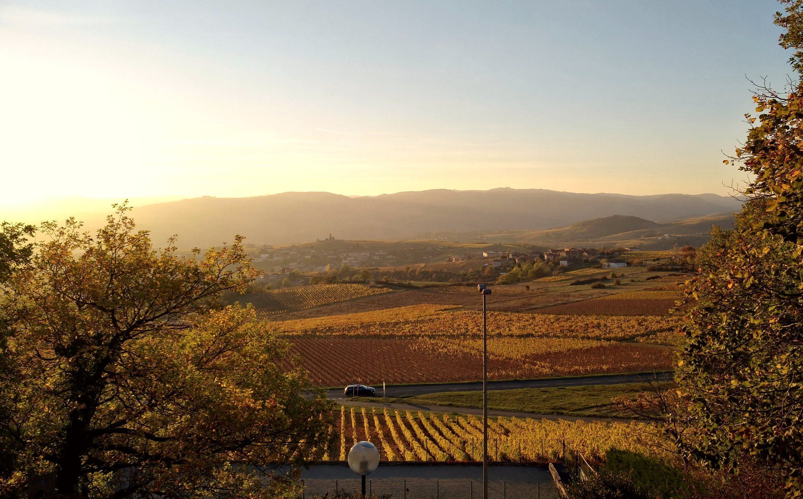

L'Agence SCIO, c'est partager notre savoir et notre passion en vous proposant des vignerons de tous horizons, avant-gardistes et respectueux de la nature. Découvrez notre sélection. Laissez-vous guider et conseiller.
Laurent
06 80 88 07 55
Carline
06 49 19 16 75

40 domaines
10 régions
365 références
2
L’ABUS D’ALCOOL EST DANGEREUX POUR LA SANTÉ. À CONSOMMER AVEC MODÉRATION.